Trabajar a la vez con otras personas
Las herramientas de esta página sirven para trabajar a la vez con otras personas en un mismo documento, en una pizarra, en una actividad de clase o en una reunión, y para ver desde el ordenador del docente las pantallas del aula de informática. Casi todas se usan desde el navegador sin instalar nada, y la mayoría no piden cuenta a los participantes, lo que las hace adecuadas para el alumnado.

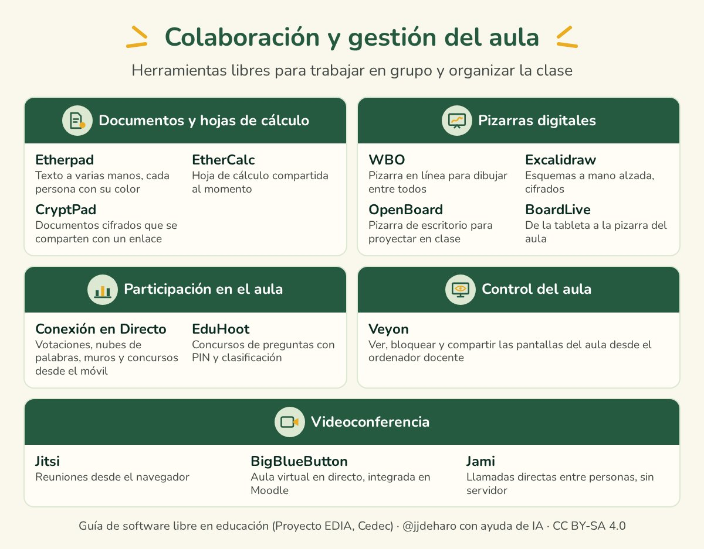
Documentos y hojas de cálculo
Para escribir entre varias personas en un mismo documento suele pensarse en los documentos de Google, pero hay alternativas libres que funcionan sin registrarse.
Etherpad
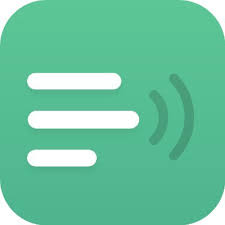
Etherpad es un editor de texto en el que varias personas escriben a la vez, cada una con su color, de modo que se ve quién ha escrito cada parte. Tiene chat y un historial que muestra cómo ha ido creciendo el texto.Lo ofrecen gratis muchos servidores, como Framapad, de la asociación francesa Framasoft, el de Disroot o pad.education, de la plataforma universitaria francesa FUN. Los documentos que dejan de editarse se borran pasado un tiempo, que indica cada servidor, así que conviene exportarlos al terminar.

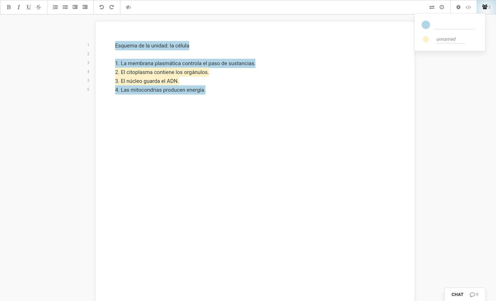
EtherCalc
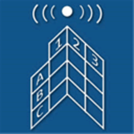
EtherCalc es una hoja de cálculo en la que se trabaja entre varias personas con solo compartir su dirección. Es sencilla, pero basta para reunir los datos de un grupo, por ejemplo los resultados de una práctica, y se puede exportar a otros formatos.
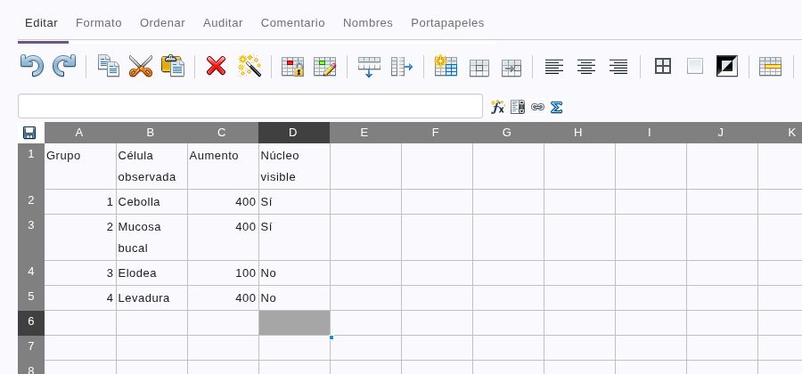
CryptPad en colaboración
 Todos los documentos de CryptPad, que se presenta en «Suites y plataformas», se pueden editar entre varias personas a la vez. Basta con compartir un enlace, para ver o para editar, y no hace falta cuenta ni para compartirlo ni para abrirlo; sin cuenta, eso sí, conviene exportar el documento para conservarlo. Incluye chat, y el contenido viaja cifrado, de modo que el servidor no puede leerlo.
Todos los documentos de CryptPad, que se presenta en «Suites y plataformas», se pueden editar entre varias personas a la vez. Basta con compartir un enlace, para ver o para editar, y no hace falta cuenta ni para compartirlo ni para abrirlo; sin cuenta, eso sí, conviene exportar el documento para conservarlo. Incluye chat, y el contenido viaja cifrado, de modo que el servidor no puede leerlo.

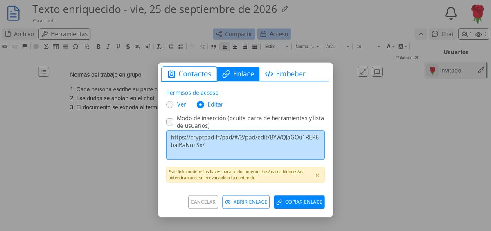
Pizarras digitales
Una pizarra digital permite escribir y dibujar con el ratón, un lápiz o el dedo, y que el alumnado lo vea en la pantalla de clase o en su dispositivo. Algunas dejan además que otras personas escriban desde el suyo.
WBO
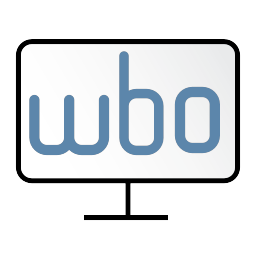
WBO es una pizarra en línea en la que muchas personas dibujan a la vez. Se crea una pizarra con un nombre y basta con pasar su dirección para que el alumnado escriba en ella; lo dibujado queda guardado y se puede descargar.
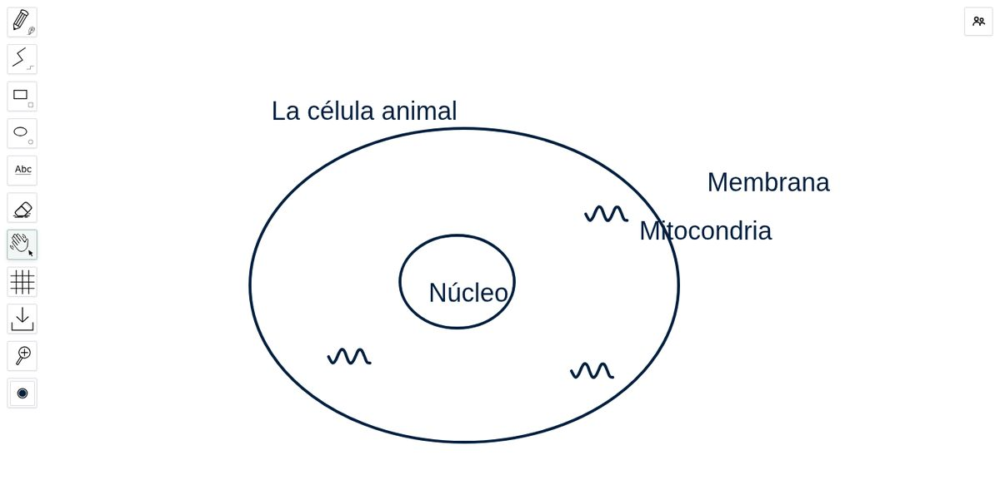
Excalidraw
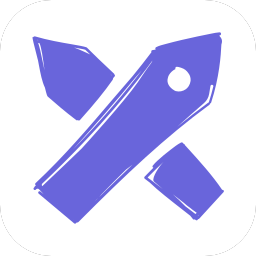
Excalidraw dibuja esquemas con aspecto de hechos a mano, con formas, flechas y texto. La colaboración en directo se activa desde el botón de compartir, que da un enlace y un código QR para invitar a otras personas. La sesión va cifrada de extremo a extremo: pasa por su servidor, pero este no puede ver lo que se dibuja.
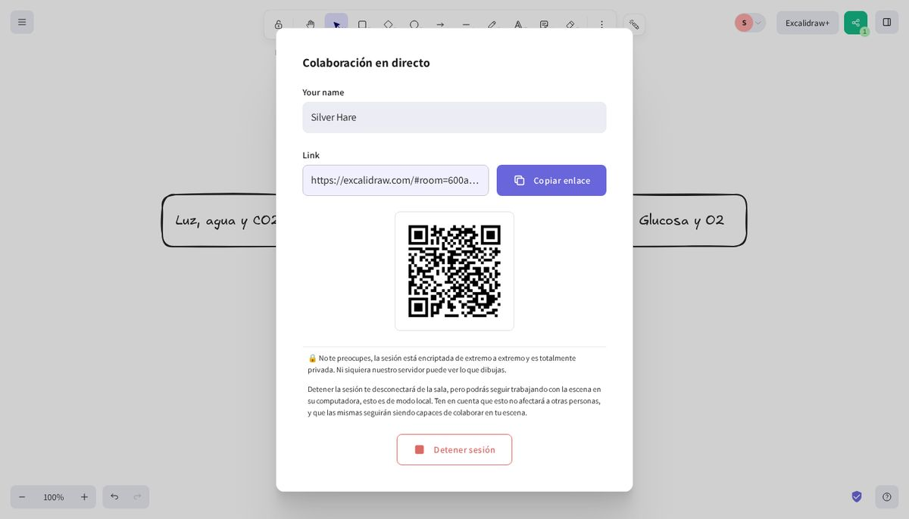
OpenBoard
OpenBoard es una pizarra de escritorio para GNU/Linux, Windows y Mac, pensada para proyectar en clase con una pantalla táctil o una tableta gráfica. Tiene lápiz, líneas, formas y texto, permite escribir encima de cualquier programa o de una página web y grabar en vídeo lo que se explica.

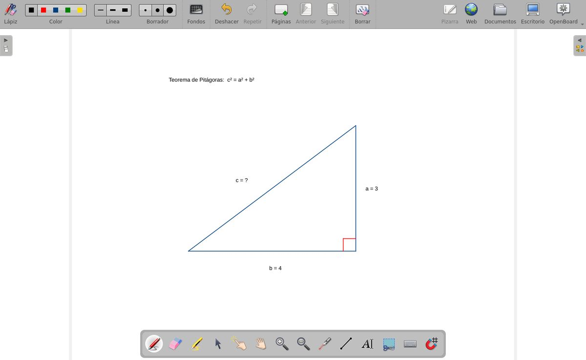
BoardLive
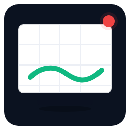
BoardLive es una pizarra compartida que funciona en el navegador. La persona que la abre invita con un código QR o un enlace, los invitados ven al momento lo que se dibuja y el anfitrión decide quién puede dibujar además de mirar. Sirve, por ejemplo, para proyectar en la pizarra digital del aula lo que el docente escribe en su tableta, sin cables.Tiene varias páginas, permite insertar imágenes y exportar a PDF, no pide cuenta y el código tiene licencia AGPL. Los dispositivos se conectan directamente entre sí, así que algunas redes de centro pueden bloquearla y conviene probarla antes en el aula.

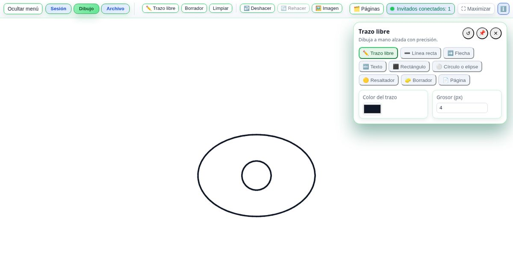
Participación en el aula
En una clase o en una charla conviene a veces conocer al momento la opinión o las respuestas de todo el grupo. Para eso suelen usarse servicios comerciales como Mentimeter, Kahoot o Padlet, que piden cuenta al docente y guardan en sus servidores lo que responde el alumnado.
Conexión en Directo
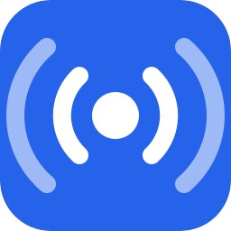
Conexión en Directo reúne diez herramientas para que el alumnado participe desde su móvil: votaciones, escalas de valoración, tickets de salida, nube de palabras, lluvia de ideas con votación, muro de notas, un concurso con clasificación y otras dinámicas de clase. El docente prepara la actividad, la comparte con un código QR, un enlace o un código corto y ve las respuestas en su pantalla al momento, sin que nadie necesite cuenta.
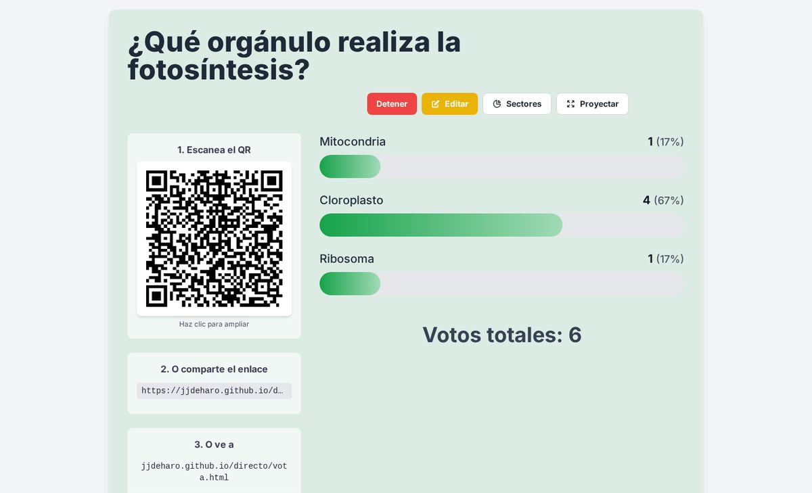
Las respuestas viajan directamente entre los dispositivos y no se guardan en ningún servidor. Para ponerlos en contacto se usa el servidor público de PeerJS, y algunas redes de centro bloquean esas conexiones directas, así que conviene probar la herramienta antes en el aula. Los resultados se pueden descargar como imagen, PDF u hoja de cálculo, según la herramienta. La interfaz está en castellano, catalán, gallego, euskera, inglés y alemán, y la colección tiene licencia AGPL. Entre sus herramientas está BoardLive, que se describe con las pizarras digitales.
EduHoot
EduHoot, creado por Samuel Soriano, es un concurso de preguntas al estilo de Kahoot. El docente proyecta la partida con un PIN y un código QR, y el alumnado entra desde el móvil con un nombre y un avatar. En la pantalla se ve cuántos han respondido y, entre pregunta y pregunta, la clasificación.
Sin cuenta se pueden lanzar los cuestionarios de su biblioteca pública o crear uno y jugarlo sin guardarlo, y en ese caso se borra al día siguiente. Para guardar los propios hace falta entrar con una cuenta de Google o de EduTicTac. Importa preguntas desde una hoja de cálculo (CSV) o desde un Kahoot público, y está en castellano, catalán, valenciano e inglés.

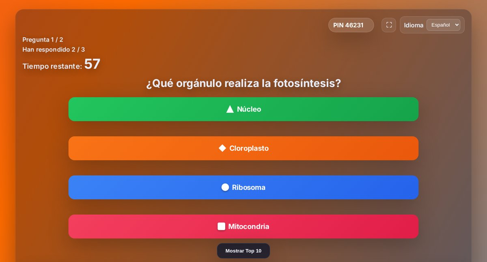
Las partidas pasan por el servidor de EduTicTac, y el código tiene licencia AGPL y está publicado para quien quiera instalarlo en el suyo.
Control del aula
En un aula de informática, el docente necesita a veces ver lo que hace cada alumno o alumna, llamar la atención de todo el grupo o enseñar su pantalla a toda la clase.
Veyon
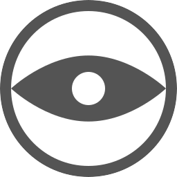
Veyon es un programa libre de control del aula. Desde el ordenador del docente muestra en miniatura y en directo las pantallas de todos los equipos, y permite bloquearlas, mostrar la propia pantalla en todas, enviar un mensaje, abrir una página web o un programa, o tomar el control de un equipo para ayudar a quien lo necesita.Funciona en GNU/Linux y Windows, con la interfaz en castellano, y tiene licencia GPL. Hay que instalarlo en todos los equipos del aula y darlos de alta en el del docente, una tarea que suele hacer quien se ocupa de la informática del centro. Zorin OS Education, que se describe en «GNU/Linux y educación», facilita su instalación.

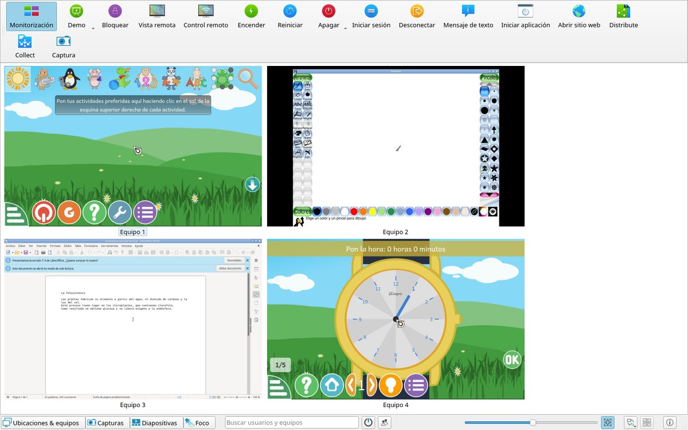
Videoconferencia
Para dar clase o reunirse a distancia hay herramientas libres de videoconferencia que funcionan en el navegador, sin instalar nada.
Jitsi
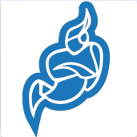
Jitsi Meet permite reuniones con vídeo, chat, pantalla compartida, turno de palabra y contraseña para la sala, desde el navegador o con su aplicación para el móvil. Cualquier organización puede instalarlo en su servidor, y hay muchos servidores públicos.En los más conocidos, la persona que abre la reunión tiene que identificarse, aunque el resto de participantes entra sin cuenta. Desde 2023, meet.jit.si exige iniciar sesión con Google, GitHub o Facebook, y Framatalk, de Framasoft, pide una cuenta propia con correo electrónico. Algunos servidores de comunidades, como el de Freifunk Múnich, todavía permiten crear reuniones sin registrarse.

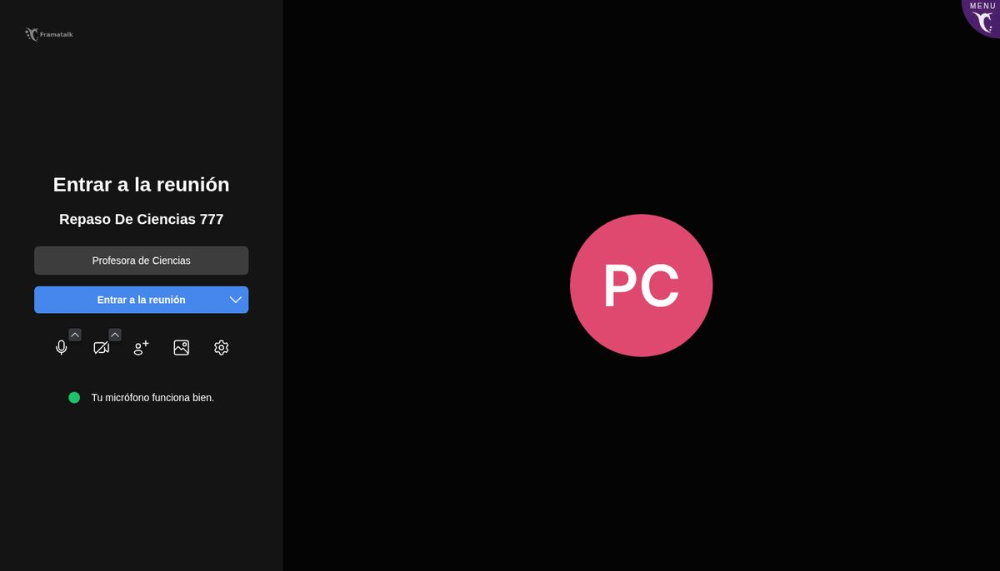
BigBlueButton
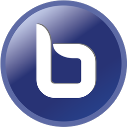
BigBlueButton es una videoconferencia libre hecha para dar clase. Además del vídeo y el chat, tiene pizarra compartida, notas comunes, encuestas, salas pequeñas para trabajar en grupo y grabación de las sesiones. Moodle incluye una actividad para usarlo (véase «Suites y plataformas»), y lo usan plataformas educativas como la del Ministerio de Educación francés.Necesita un servidor propio, así que se usa a través de la plataforma que lo ofrezca. En su web se puede probar sin cuenta, en sesiones cortas de dos personas.

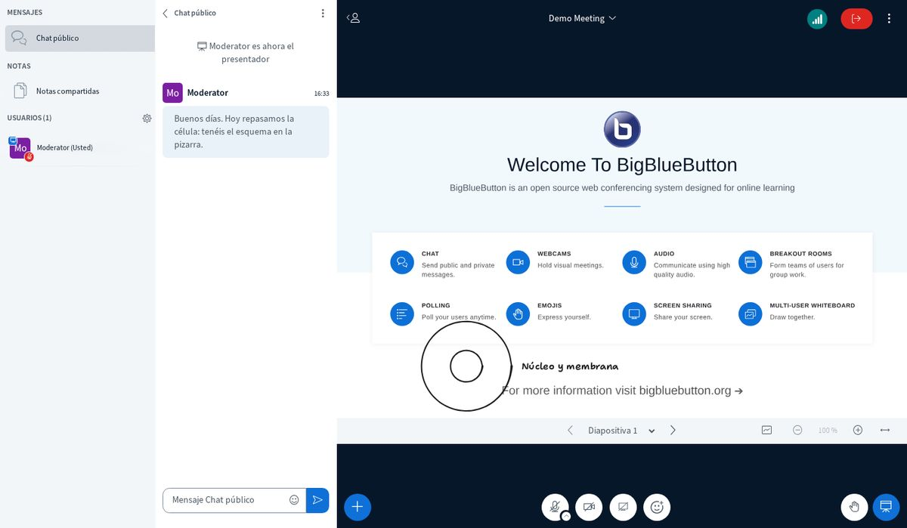
Jami
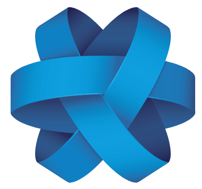
Jami, del proyecto GNU, sirve para mensajes, llamadas y videollamadas, también en grupo, y para enviar archivos. Conecta directamente a las personas, sin servidores intermedios que guarden los datos, y todo va cifrado de extremo a extremo. No hace falta correo ni teléfono: la cuenta se crea en el propio programa, que funciona en GNU/Linux, Windows, Mac, Android e iOS.
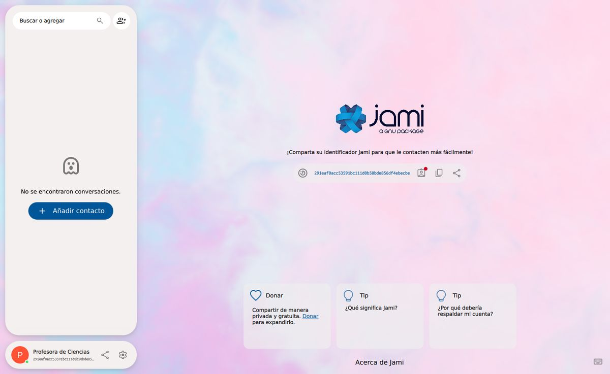